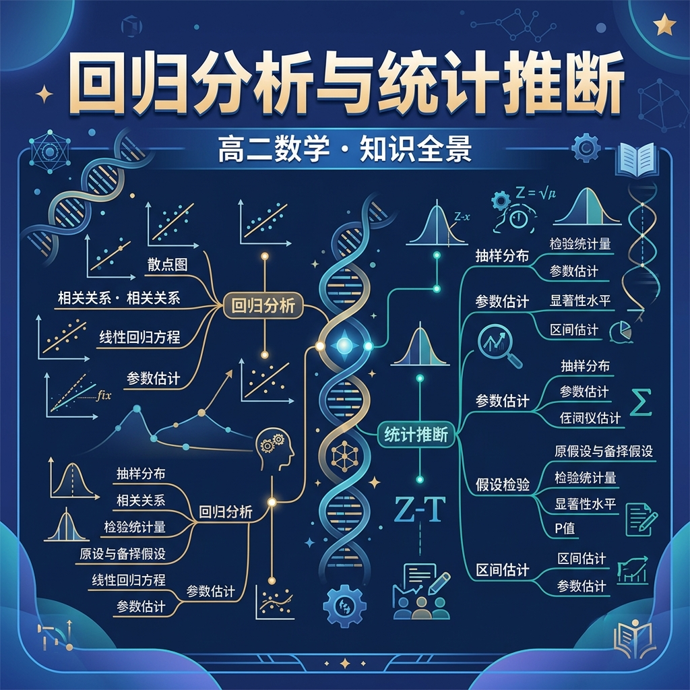

回归分析与统计推断——高中数学核心知识

能用自己的语言解释回归分析与统计推断的核心概念和定义
能运用回归直线方程解决具体问题
能在新情境中灵活应用回归分析与统计推断的知识
你正在学习回归分析与统计推断，需要掌握其核心概念和方法
💡 本课的前置知识：随机变量与分布
关于"散点图与相关性"，下列说法正确的是？
And 你已经掌握了基本的数学概念
But 仅凭已有知识，无法深入理解散点图与相关性的内涵与应用
Therefore 所以学习散点图与相关性——掌握其定义、方法和应用
散点图与相关性是回归分析与统计推断中的重要内容。
详见课本相关章节的详细定义和推导过程。
注意审题，仔细计算，检查每一步
关于"散点图与相关性"，下列说法正确的是？
And 你已经掌握了散点图与相关性
But 仅凭已有知识，无法深入理解回归直线方程的内涵与应用
Therefore 所以学习回归直线方程——掌握其定义、方法和应用
回归直线方程是回归分析与统计推断中的重要内容。
详见课本相关章节的详细定义和推导过程。
注意审题，仔细计算，检查每一步
关于"回归直线方程"，下列说法正确的是？
And 你已经掌握了回归直线方程
But 仅凭已有知识，无法深入理解最小二乘法的内涵与应用
Therefore 所以学习最小二乘法——掌握其定义、方法和应用
最小二乘法是回归分析与统计推断中的重要内容。
详见课本相关章节的详细定义和推导过程。
注意审题，仔细计算，检查每一步
关于"最小二乘法"，下列说法正确的是？
And 你已经掌握了最小二乘法
But 仅凭已有知识，无法深入理解独立性检验χ²的内涵与应用
Therefore 所以学习独立性检验χ²——掌握其定义、方法和应用
独立性检验χ²是回归分析与统计推断中的重要内容。
详见课本相关章节的详细定义和推导过程。
注意审题，仔细计算，检查每一步
关于"独立性检验χ²"，下列说法正确的是？
回顾本课核心概念，用自己的话总结回归分析与统计推断的定义和关键性质。
选择一个真实场景，运用回归分析与统计推断的知识建立模型并分析。
设计一道关于回归分析与统计推断的原创综合题，要求融合至少两个关键概念，并给出详细解答。
关于"独立性检验χ²"，下列说法正确的是？
用回归分析与统计推断的知识解决一个实际问题，写出完整的解题过程。
散点图与相关性的常见错误：注意审题，仔细计算，检查每一步
回归直线方程的常见错误：注意审题，仔细计算，检查每一步
最小二乘法的常见错误：注意审题，仔细计算，检查每一步
独立性检验χ²的常见错误：注意审题，仔细计算，检查每一步
回归分析是一种统计方法，用于研究两个或多个变量之间的关系。它帮助我们理解一个变量（因变量）如何随着另一个变量（自变量）的变化而变化。例如，我们可以研究学生的学习时间（自变量）与考试成绩（因变量）之间的关系。通过回归分析，我们可以预测学生在不同学习时间下的可能成绩。回归分析的核心是建立一个数学模型，描述变量之间的关系。这个模型可以是线性的，也可以是非线性的，具体取决于数据的特性。
线性回归是最简单的回归模型，假设因变量与自变量之间存在线性关系。模型的一般形式为：Y = aX + b，其中Y是因变量，X是自变量，a是斜率，b是截距。例如，假设我们研究广告投入（X）与销售额（Y）的关系，通过收集数据并拟合线性回归模型，可以预测不同广告投入下的销售额。斜率a表示广告投入每增加1万元，销售额平均增加a万元。截距b表示当广告投入为0时的销售额。线性回归模型的拟合通常使用最小二乘法，使得预测值与实际值的误差平方和最小。
多元线性回归扩展了简单线性回归，允许使用多个自变量来预测因变量。模型形式为：Y = a1X1 + a2X2 + ... + anXn + b。例如，预测房价时，可以使用房屋面积（X1）、卧室数量（X2）、地段（X3）等多个因素。每个系数a表示在其他变量不变的情况下，该自变量对因变量的影响。多元线性回归能更全面地捕捉现实世界的复杂性，但也增加了模型的复杂度。需要注意的是，自变量之间应尽量避免高度相关（多重共线性），否则会影响模型的稳定性和解释性。
评估回归模型的常用指标包括R平方、调整R平方、均方误差（MSE）等。R平方表示模型解释的因变量变异比例，范围在0到1之间，越接近1说明模型拟合越好。例如，如果R平方为0.8，表示80%的因变量变异可以由模型解释。调整R平方考虑了自变量数量，防止过度拟合。MSE衡量预测值与实际值的平均误差平方，越小越好。此外，残差分析也很重要，检查残差是否随机分布，以验证模型假设是否成立。如果残差呈现某种模式，可能说明模型遗漏了重要变量或存在非线性关系。
统计推断用于从样本数据推断总体特征。在回归分析中，我们可以对回归系数进行假设检验，判断自变量是否对因变量有显著影响。例如，检验斜率a是否为0（原假设），如果p值小于显著性水平（如0.05），则拒绝原假设，认为自变量对因变量有显著影响。置信区间也是重要的推断工具，给出了系数可能范围的估计。例如，斜率的95%置信区间为[0.5, 1.2]，表示有95%的把握认为真实斜率在此范围内。统计推断帮助我们判断模型的可靠性和变量的重要性。
回归分析中可能遇到多重共线性、异方差性、自相关性等问题。多重共线性指自变量之间高度相关，导致系数估计不稳定。例如，在预测房价时，房屋面积和卧室数量可能高度相关。异方差性指残差的方差随自变量变化，违反回归假设，可通过加权最小二乘法或变换因变量解决。自相关性常见于时间序列数据，残差之间存在相关性，可用广义最小二乘法处理。此外，异常值和杠杆点也可能影响模型，需要通过残差分析和Cook距离检测和处理。
回归分析广泛应用于经济学、医学、工程等领域。例如，经济学家用回归分析研究GDP增长与失业率的关系；医学研究者分析药物剂量与疗效的关系；工程师预测产品寿命与使用条件的关系。在商业中，回归分析可用于客户行为预测、价格优化等。例如，电商平台可以通过回归分析预测促销活动对销售额的影响，从而优化营销策略。回归分析的实际应用需要结合领域知识，选择合适的模型和变量，并谨慎解释结果，避免因果关系的误判。
当变量间关系非线性时，可以使用非线性回归模型。例如，经济增长与时间可能呈指数关系，可用Y = a*e^(bX)建模。多项式回归也是一种常见扩展，如Y = aX^2 + bX + c，适用于曲线关系。此外，逻辑回归用于分类问题，如预测客户是否购买产品。广义线性模型（GLM）进一步扩展了回归分析，允许因变量服从非正态分布（如泊松分布、二项分布）。选择合适模型需结合数据特性和研究问题，并通过模型比较和验证确定最佳模型。
1. 你能举一个生活中可以用回归分析解决的例子吗？2. 线性回归模型的基本形式是什么？3. 为什么需要评估回归模型？
1. 如果回归模型的R平方为0.6，这意味着什么？2. 如何判断一个自变量对因变量的影响是否显著？3. 什么是多重共线性，它会导致什么问题？
常见误区包括将相关性误认为因果关系，忽略模型假设的检验，以及过度依赖R平方。错因可能是缺乏对统计概念的理解或急于得出结论。诊断时需强调因果推断的复杂性，坚持模型验证的重要性，并综合使用多种评估指标。
设计一个回归分析研究方案：选择你感兴趣的主题（如运动时间与健康指标的关系），确定因变量和自变量，描述数据收集方法，并解释你将如何建立和评估回归模型。分析可能遇到的挑战及解决方案。
先独立作答，再点选项查看对错与错因。
根据右表数据计算得到的回归方程ŷ=15.8x+120，下列说法正确的是
残差分析的主要目的是
若决定系数R²=0.64，说明
已知Σ(xi-x̄)²=180，Σ(yi-ȳ)²=500，Σ(xi-x̄)(yi-ȳ)=240，则回归系数b₁=____
答案：1.33
b₁=Σ(xi-x̄)(yi-ȳ)/Σ(xi-x̄)²=240/180≈1.33
对同一组数据分别作y~x和x~y回归，两条直线的斜率乘积范围是____(用区间表示)
答案：[0,1]
根据相关系数性质，b₁·b₂=r²∈[0,1]
关于回归直线必经过的点
现有数据同时包含气温和客流量，如何改进预测模型？